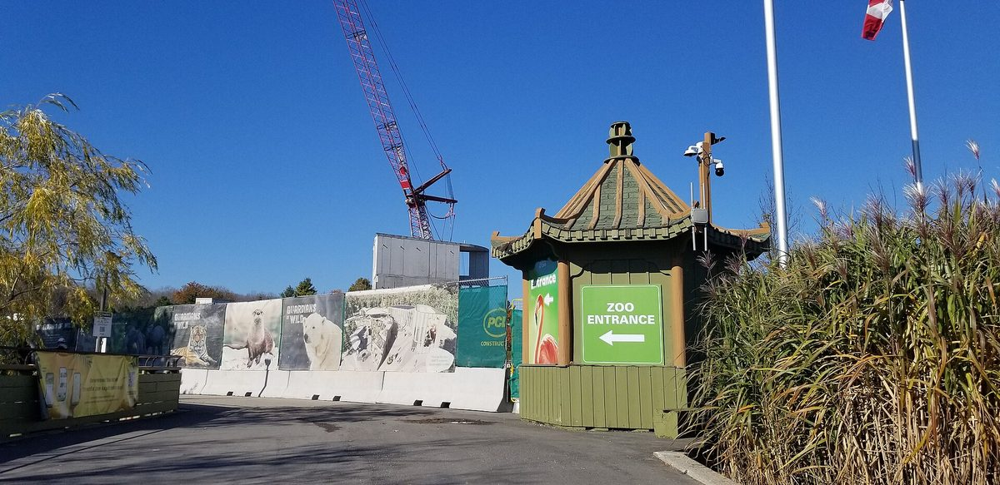

캐나다 토론토 동물원 옆 바이오가스 협동조합, 시민 채권으로 400만 달러 넘게 모아 발전소 운영

조쉐어 협동조합 첫 모집 220만 캐나다달러에 약 300명 참여…조합원 약 800명·1인 1표, 연 약 1만5,000t 음식물·분뇨로 약 250가구분 전력
캐나다 토론토 동물원 부지를 빌려 쓰는 조쉐어 바이오가스 협동조합(ZooShare Biogas Co-Operative)이 시민에게 판 공동체 채권으로 발전소를 짓고 운영하고 있다. 2011년 설립된 조합은 발전소 지을 돈이 없자 2013년부터 시민이 지역 사업에 돈을 빌려주고 정해진 기간에 이자와 함께 돌려받는 공동체 채권을 팔았고, 첫 모집 220만 캐나다달러에 약 300명이 참여했으며 두 차례 더 모아 채권 총액이 400만 달러를 넘었다. 약 2년 공사 끝에 2021년 4월 가동한 발전소는 해마다 음식물쓰레기와 동물원 분뇨 약 1만5,000t으로 바이오가스를 만들어 토론토 일반 가정 약 250가구가 쓸 만큼의 전기를 생산한다. 조합원은 약 800명으로 가입비 10달러에 1인 1표를 갖고 이사회를 뽑으며, 채권은 모집 때마다 다 팔렸고 대기자가 150명을 넘는다. 롭 그랜드 조쉐어 총괄매니저는 조합원에게 가장 중요한 것은 "투자로 자신의 가치를 지지하는 것"이라고 말했다. 바스마 마제르비 빅토리아대(UVic) 교수는 2026년 5월 공동체 에너지 사업의 자금 조달·소유 구조를 모은 시범 데이터베이스 'Community Energy Finance Navigator'를 열어 86개 사업을 담았으며, 거의 모든 사업이 보조금·융자·공동체 채권·협동조합 출자 등을 겹쳐 자금을 마련한다고 분석했다.
시민에너지 관점
시민 약 300명이 220만 캐나다달러를 빌려주며 시작한 발전소가 조합원 약 800명, 대기자 150명 넘는 조합으로 자란 것은, 시민이 수익률보다 내 동네 에너지에 돈을 대는 데서 가치를 찾는다는 점을 보여 준다. 작은 시민 사업은 은행이 꺼려 돈을 모으기 어렵다는 우려가 있지만, 공동체 채권은 바로 은행이 보기에 너무 작거나 이른 단계라는 그 빈틈을 메우는 수단으로 쓰였다. 가입비 10달러로 한 표씩 갖고 이사회를 뽑는 구조는 시민이 돈을 대는 데서 그치지 않고 사업의 결정권을 함께 쥐는 주인이 되는 길이다. 국내 시민발전 사업도 보조금에만 기대지 말고 주민 채권과 출자를 처음부터 자금 계획에 넣고, 지자체는 이를 쉽게 모을 수 있는 제도부터 갖춰야 한다.
출처: Corporate Knights 2026-10-22 Srivindhya Kolluru 원문 보기
カナダ・トロント動物園そばのバイオガス協同組合、市民債で400万ドル超を集め発電所を運営
ズーシェア協同組合の初回募集220万カナダドルに約300人が参加…組合員約800人・1人1票、年約1万5,000tの食品廃棄物・ふん尿で約250世帯分の電力
カナダ・トロント動物園の敷地を借りるズーシェア・バイオガス協同組合（ZooShare Biogas Co-Operative）が、市民に販売したコミュニティ債で発電所を建てて運営している。2011年に設立された組合は発電所を建てる資金がなかったため、2013年から、市民が地域の事業にお金を貸し、決められた期間に利息とともに返してもらうコミュニティ債を販売し、初回募集の220万カナダドルには約300人が応じ、さらに2回の募集を経て債券の総額は400万ドルを超えた。約2年の工事を経て2021年4月に稼働した発電所は、毎年約1万5,000tの食品廃棄物と動物園のふん尿からバイオガスをつくり、トロントの一般家庭約250世帯分に相当する電力を生み出している。組合員は約800人で、加入費10ドルで1人1票を持って理事会を選び、債券は募集のたびに完売し、順番待ちは150人を超える。ズーシェアのロブ・グランド総括マネジャーは、組合員にとって最も大切なのは「投資を通じて自らの価値観を支えること」だと語った。ビクトリア大学（UVic）のバスマ・マジェルビ准教授は2026年5月、地域エネルギー事業の資金調達と所有構造を集めた試験版データベース「Community Energy Finance Navigator」を公開して86事業を収録し、ほぼすべての事業が補助金、融資、コミュニティ債、協同組合出資などを重ねて資金を確保していると分析した。
市民エネルギーの視点
約300人の市民が220万カナダドルを貸して始まった発電所が、組合員約800人、順番待ち150人超の組合に育ったことは、市民が利回りよりも自分の地域のエネルギーにお金を出すことに価値を見いだしていることを示している。小さな市民事業は銀行に敬遠されて資金を集めにくいとの懸念があるが、コミュニティ債はまさに、銀行から見て小さすぎる、あるいは早すぎるというその隙間を埋める手段として使われた。加入費10ドルで1票ずつ持ち理事会を選ぶ仕組みは、市民がお金を出すだけにとどまらず、事業の決定権をともに握る持ち主になる道だ。韓国の市民発電事業も補助金だけに頼らず、住民債や出資を最初から資金計画に組み込み、自治体はそれを集めやすくする制度をまず整えるべきだ。
出典: Corporate Knights 2026-10-22 Srivindhya Kolluru 原文を読む
加拿大多伦多动物园旁的沼气合作社，靠市民债券筹得400多万加元运营电站
ZooShare合作社首期募集220万加元约300人参与…社员约800人、一人一票，每年用约1万5,000吨厨余和粪便发电，约供250户用电
租用加拿大多伦多动物园土地的ZooShare Biogas Co-Operative，依靠向市民出售的社区债券建成并运营一座电站。该合作社成立于2011年，因缺乏建厂资金，从2013年起出售社区债券，由市民把钱借给本地项目，并在约定期限内连本带息收回；首期募集220万加元，约300人参与，此后又募集两轮，债券总额超过400万加元。经过约两年施工，电站于2021年4月投入运行，每年把约1万5,000吨厨余垃圾和动物园粪便转化为沼气发电，发电量相当于多伦多约250户普通家庭的用电。合作社约有800名社员，入社费10加元，一人一票选举理事会；每次发行的债券都售罄，候补名单超过150人。ZooShare总经理Rob Grand表示，对社员来说最重要的是"通过投资支持自己的价值观"。维多利亚大学（UVic）副教授Basma Majerbi于2026年5月推出汇集社区能源项目融资和所有权结构的试点数据库"Community Energy Finance Navigator"，收录86个项目，并分析指出几乎所有项目都叠加使用补助、贷款、社区债券和合作社股金等多种资金来源。
市民能源视角
一座由约300名市民出借220万加元起步的电站，成长为拥有约800名社员、候补者超过150人的合作社，说明市民在为本社区能源出资中看到的价值，重于收益率。有人担心小型市民项目难获银行青睐、筹资困难，但社区债券恰恰被用来填补银行眼中"规模太小或阶段太早"的空白。以10加元入社、一人一票选举理事会的结构，让市民不止于出钱，而是成为共同掌握项目决策权的主人。韩国的市民发电项目也不应只依赖补贴，而应从一开始就把居民债券和出资纳入资金计划，地方政府则应先建立便于募集这些资金的制度。
来源: Corporate Knights 2026-10-22 Srivindhya Kolluru 查看原文
Toronto Zoo biogas co-op runs its plant on more than 4 million dollars raised through community bonds
About 300 people backed ZooShare's first 2.2 million Canadian dollar raise; about 800 members with one vote each, turning some 15,000 tonnes of food waste and manure a year into power for about 250 homes
ZooShare Biogas Co-Operative, which leases land from the Toronto Zoo in Canada, built and runs its power plant with community bonds sold to the public. Formed in 2011 without the funds to build a plant, the co-op began selling community bonds in 2013, letting residents lend money to a local project and be repaid with interest over a set term; about 300 people backed the first 2.2 million Canadian dollar raise, and two further rounds took total bond financing past 4 million dollars. The plant came online in April 2021 after about two years of construction and each year turns about 15,000 tonnes of food waste and zoo manure into biogas, generating enough electricity for about 250 average Toronto homes. The co-op has about 800 members who pay a 10 dollar membership fee and get one vote each in electing the board; every bond offering has sold out and the waiting list tops 150 people. Rob Grand, ZooShare's general manager, said the most important thing to members is "supporting their values through their investments." Basma Majerbi, an associate professor at the University of Victoria (UVic), launched the pilot Community Energy Finance Navigator database in May 2026 to track how community energy projects are financed and owned; it covers 86 projects, and she found that almost every one stacks grants, loans, community bonds, co-op equity and other sources.
Citizen Energy View
A plant that began with about 300 citizens lending 2.2 million Canadian dollars has grown into a co-op of about 800 members with more than 150 on a waiting list, showing that people value funding energy in their own community more than chasing returns. There are worries that small citizen projects struggle to raise money because banks shy away, but community bonds were used precisely to fill that gap, where projects look too small or too early for a bank. A structure in which a 10 dollar fee buys one vote in electing the board lets citizens go beyond supplying money and become owners who share in the project's decisions. Korean citizen power projects should not rely on subsidies alone but build resident bonds and equity into their financing plans from the start, and local governments should first put in place rules that make such capital easy to raise.
Source: Corporate Knights 2026-10-22 Srivindhya Kolluru Read the original